RISC-V 汇编语言
约 2877 个字 27 行代码 12 张图片 预计阅读时间 10 分钟
1. 指令集架构
适用于某一类处理器的特定指令集被称为指令集架构（instruction set architecture），通过汇编语言来表示．
- ARM指令集架构
- Intel x86
- MIPS
- RISC-V
- \(\cdots\)
2. 寄存器
汇编语言的每条语句被称为一个指令（instruction），每一行最多包含一条指令．汇编语言的操作数通常为寄存器（registers）内部的数据，由于寄存器直接在硬件中，数据处理很快，但寄存器的数量也有限制．
在RISC-V中有32个寄存器，其RV32变体中，每个寄存器是32位宽；这些32位、4字节的组被称为字．若无特殊说明，本课程的RISC-指的均为其RV32变体．
这32个寄存器编号为x0~x31，其中x0的值永远为0．寄存器没有数据类型，操作寄存器的指令决定了我们如何处理寄存器里的数据．
3. RISC-V 汇编
3.1 算术与逻辑运算
RISC-V的算术与逻辑运算指令具有相同的语法：one two, three, four：
- one：操作的名字
- two：操作结果的终点
- three：第一个操作数
- four：第二个操作数
算术运算：add x1, x2, x3 与 sub x4, x5, x6 等价于 x1 = x2 + x3 与 x4 = x5 - x6．由于x0恒为0，因此可以用 add x3, x4, 0 达到 x3 = x4 的效果（常用于复制数据）．
汇编语言中的常数被称为立即数（immediate），immediate加法有特定的指令：addi x3, x4, 10．但是不需要 subi，因为 addi 操作的立即数可以是负数．
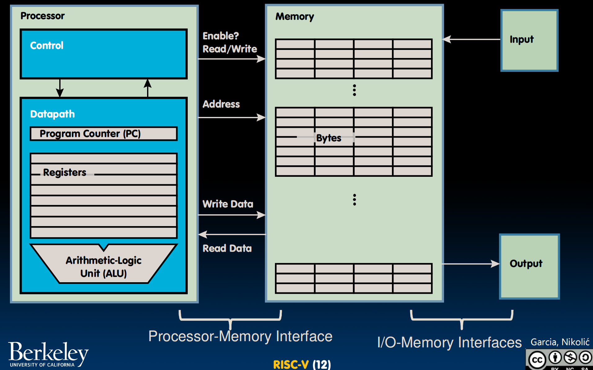
逻辑运算：含and、or、xor、sll（shift left logical逻辑左移）、srl（逻辑右移）、sra（arithmetic 算术右移）以及对应的immediate形式
and：
Register: and x5, x6, x7 # x5 = x6 & x7
Immediate: andi x5, x6, 3 # x5 = x6 & 3
用于掩码：与 0x000000FF andi 提取最低有效位，与0xFF000000 andi提取最高有效位．
注意到没有not，因为可以与 \((11111111)_2\) 做异或操作来翻转每一位的值，因此not是不必要的．
注意，正数的逻辑、算数右移，负数的算术右移都是向下取整．
3.2 内存存储
内存（Memory）存储程序与数据．要访问内存中的每一个字，处理器（Processor）必须提供一个地址．选取完地址后，我们可以选择读取（load from memory）或写入（store to memory）．
内存中的地址是以字节为最小单位而不是字．
字节序（endianness）规定了字节在内存中的存储位置．
- 小端序（Little-Endian）：最低有效位放在最低地址
- 大端序（Big-Endian）：最高有效位放在最低地址
例如1025的存储：
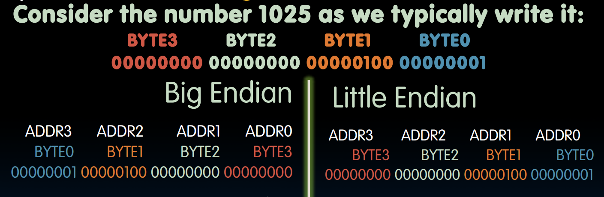
在小端序中，字的地址与最右侧字节的地址相等．如上图中，字的地址为ADDR0．
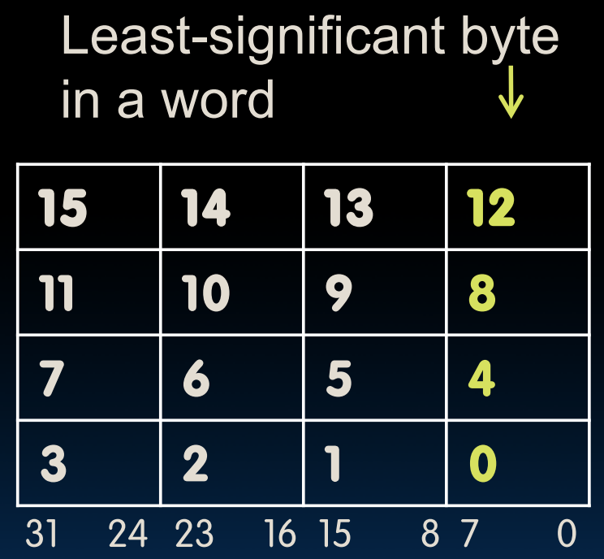
DRAM（dynamic random access memory）是实现内存的主流手段．其包含多种类型，如DDR（double data rate）、HBM（high bandwidth memory）．与寄存器相比，内存速度较慢而容量较高．
RISC-V的访存指令语法：op rs2, offset(rs1)．
Load Word & Store Word：从内存中读取/存入整个字（4bytes），注意 x15 存的是内存的地址，且偏移量此时应该为4的倍数（因为是按字读取，需要内存对齐），偏移量表示往高地址偏移．
数据流（data flow）是左边写寄存器、右边写内存；lw是右流到左，sw是左流到右．
// C code:
int A[100];
g = h + A[3];
// RISC-V code:
lw x10, 12(x15)
# x10 gets A[3]
# x15: base register (pointer to A[0])
# 12: offset in bytes (int = 4 bytes, so A[3] - A[0] = 12 bytes)
add x10, x12, x10
# x10 gets h + A[3]
sw x10, 40(x15)
# A[10] = h + A[3]
Load Bytes & Store Bytes：从内存中读取/存入字节．此时偏移量不必是4的倍数．不管偏移量是多少字节，数据总是复制到目标寄存器的最低字节位置，而剩下三个高位字节会自动全部填充那个存入字节的最高位（符号位），即符号扩展，从而不改变有符号数的大小．如果操作数是无符号数，不想让其自动扩展1，可以使用 lbu．
同理，sb只存放寄存器的最低位到内存．
lb x10, 3(x11)
sb x10, 4(x11)
3.3 分支与跳转
条件分支：bxx reg1, reg2, label
beq reg1, reg2, L1：若reg1与reg2内值相等，则跳转到L1标签所在命令，否则继续下一条指令．
bne：判断不相等blt（branch less than）：判断小于（如果需要bgt，交换顺序即可）bge（branhc greater or equal）：判断大于等于（如果需要ble，交换顺序即可）bltu、bgeu：对应的无符号版本
无条件跳转：j label
与 beq x0, x0, label 的差别：不用存储 x0，可以有更多空间存偏移量，跳得更远
与C语言的差别：C语言是“满足条件则执行特定内容”，RISC-V是”满足条件的跳到特定处”，因此汇编的条件判断和C通常要反着来，比如C是判断相等则执行特定代码，到汇编要变为判断不相等则跳过特定代码：
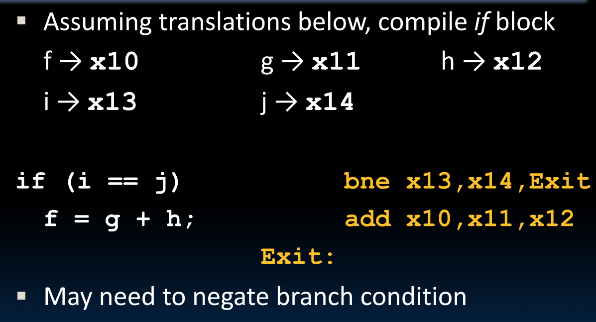
也可以加入Else分支，判断不相等后进入Else．记住要在if的结束块处加上跳转到Exit的指令，否则会顺着执行Else的部分．
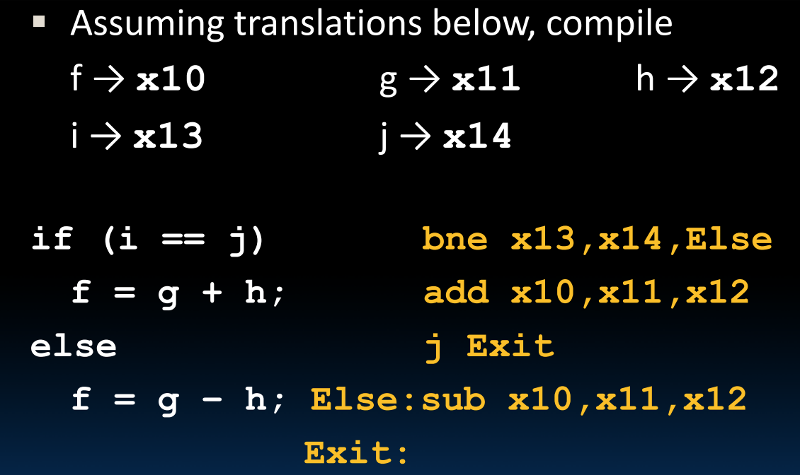
3.4 循环
通过之前的指令已经可以实现for循环：
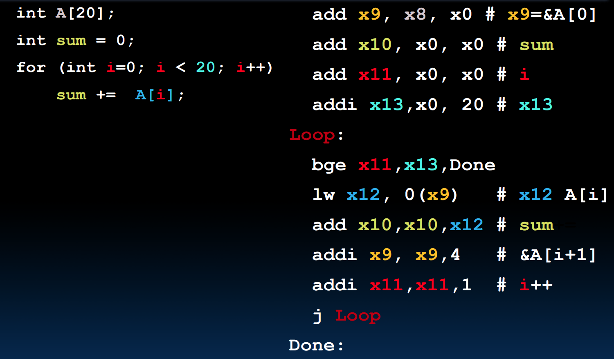
3.5 符号化寄存器名与伪指令
为了让汇编代码更易读、易写，RISC-V引入了符号化寄存器名和伪指令．
符号化寄存器名：为了体现寄存器的用途而起的绰号．例如a0-a7（对应x10-x17），代表存放函数参数的寄存器；x0起名为zero，代表永远为0．
伪指令：伪指令不是真正的硬件指令，只是汇编器提供的语法糖，汇编器会将伪指令翻译成硬件支持的基本指令．
mv rd, rs（move）将rs的值复制到rd，本质为addi rd, rs, 0．li rd, 13（load immediate）将立即数13加载到rd，本质为addi rd, x0, 13nop（no operation）发呆，本质为addi x0, x0, 0．
4. 函数调用
4.1 函数调用步骤
- 将参数放在函数可以访问的地方
- 将控制权交给函数
- 给函数一些本地存储资源
- 函数完成工作
- 将返回值放在调用方可访问的地方，恢复在此期间使用过的所有寄存器状态，释放本地存储资源
- 将控制权交给调用点
4.2 寄存器调用约定
- 参数与返回值寄存器（a0-a7，即x10-x17）：像函数传递参数．其中a0和a1还可以用于存放函数的返回值．
- 返回地址寄存器（ra，即x1）：专门用于保存函数调用结束后的返回地址，以便程序能回到调用前的位置．
- 保存寄存器（s0-s11，即x18-x27）：通常用于在函数调用期间保存需要保留的数据．
- 栈指针（sp，即x2）：用于指向栈顶．
4.3 指令支持
- 调用函数：使用
jal（jump and link），调用函数时通常使用jal FunctionLaber指令，跳转到目标函数地址，同时将当前指令的下一条指令地址存入ra中，以便后续返回． - 从函数返回：使用
jr（jump register），函数执行完毕后使用jr ra返回．函数返回不能单纯使用j的固定地址跳转，因为一个函数可能会被多处调用．伪指令ret等价于jr ra．
实际上，处理这类跳转的真实指令只有：jal rd, label（rd表示destination register，用于保存跳转时的返回地址，即跳转前的下一条指令）与 jalr rd, rs imm．jal FunctionLabel 相当于 jal ra, FunctionLabel；j Label 相当于 jal x0, Label（相当于直接把返回地址丢弃）．
过程例子（sum函数）：
1000 mv a0, s0
1004 mv a1, s1
1008 jal sum
1012 ...
...
2000 sum: add a0, a0, a1
2004 jr ra
4.4 栈帧
栈空间：函数调用时，如果寄存器不够用或需要保存旧的寄存器值（如 ra），就要将数据存入内存的栈中．栈是向下生长的，新数据的地址更小．x2是栈指针，其始终指向栈中最后一个被使用的内存空间．
栈的操作：
- push（入栈）：为数据分配空间，例如存储8字节空间，则要减小sp的值
addi sp, sp, -8 - pop（出栈）：为数据回收空间．将sp加上之前减去的数值，将栈帧从栈上丢弃．
申请的这块用于存储数据的空间被称为栈帧．栈帧存放内容包括参数（超过a0-a7的范围）、局部变量（同参数）、返回地址（如果调用了其他函数）、保存的寄存器（s0-s11，按照约定，如果使用了这些，要在调用前存他们）．
以该函数为例子，将s0与s1的数据暂存：
int Leaf(int g, int h, int i, int j)
{
int f;
f = (g + h) - (i + j);
return f;
}
addi sp, sp, -8 # 申请2个int空间
sw s1, 4(sp) # 将s1数据暂存
sw s0, 0(sp) # 讲s0数据暂存
add s0, a0, a1 # g + h
add s1, a2, a3 # i + j
sub a0, s0, s1 # return value (g + h) - (i + j)
lw s0, 0(sp) # 将s0数据读回
lw s1, 4(sp) # 将s1数据读回
addi sp, sp, 8 # 将sp指针恢复
jr ra
4.5 嵌套函数
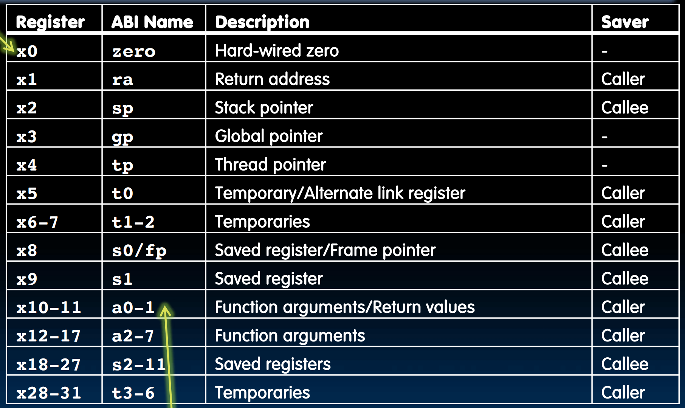
RISC-V有一套严格的寄存器调用约定．所有的寄存器对应属性可以见上图．
- 不保证保留的寄存器：如
ra、a0-a7、t0-t6等．这些寄存器值在调用函数后会破坏，如果调用方想要调用其他函数后还想使用这些值，需要自己将这些值压栈保存． - 保证保留的寄存器：如
s0-s11和sp．调用方可以放心地认为这些寄存器内部的值不会修改．如果被调用的函数需要修改这些寄存器中的值，它需要在执行前将旧值压栈保存，返回前将旧值出栈恢复．
以该函数为例，介绍一下嵌套调用过程：
int sumSquare(int x, int y)
{
return mult(x, x) + y;
}
首先考虑我们需要存哪些值．两个参数分别为a0存x，a1存y；当调用 mult(x, x) 时，a1也会成为x而a0不变，因此我们需要将a1存起来；同时记得每次嵌套必须存储的ra，也就是说我们要在栈申请8字节空间．
将数据压栈后，我们需要将mult需要的参数准备好，即将a0赋值给a1使得a1存的也是x．调用函数后将栈中的值取出，并恢复sp．然后继续执行 sumSuqare 后续的 +y 操作，最后返回．
# Prologue: push操作
addi sp, sp, -8
sw ra, 4(sp)
sw a1, 0(sp)
# Body: 调用嵌套函数
mv a1, a0
jal mult
# Epilogue: pop操作
lw a1, 0(sp)
lw ra, 4(sp)
addi sp, sp, 8
# 完整自己的后续操作，返回
add a0, a0, a1
jr ra
4.6 内存管理
RV32的内存分配：
- 栈从 bfff fff0 开始，往下生长（其余均为往上生长），sp指向此处．
- 程序文段从 0001 0000 开始，pc指向此处
- 静态数据（常量、static变量）从1000 0000开始，gp（global point）指向此处
- 堆在静态数据上方．
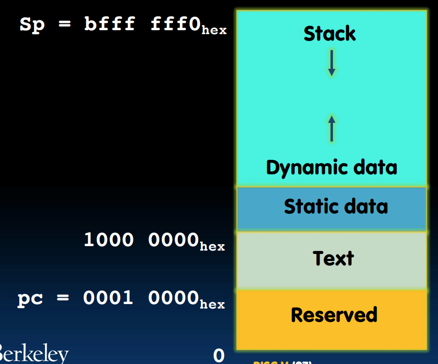
5. 编译
汇编语言的编译过程（其实就是C语言编译的后半段）：
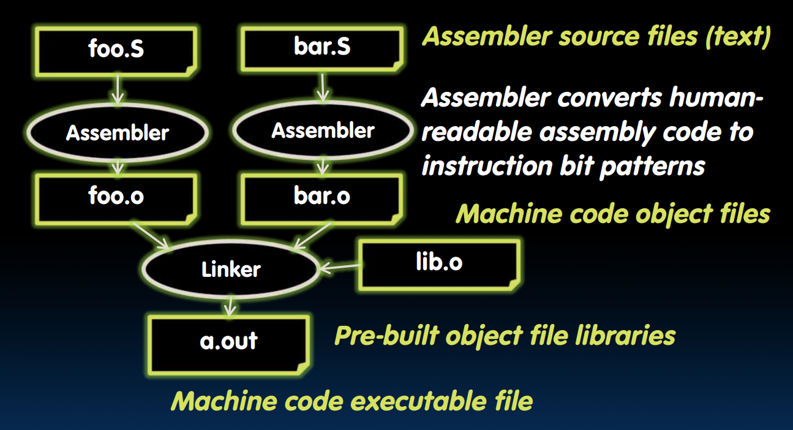
最后的 a.out 太大了，无法存入寄存器，必须存在内存中．
RISC-V的每条指令都是32位，即每一个字都是一条指令．
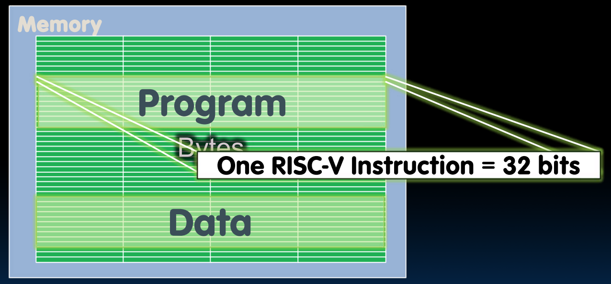
程序计数器（program counter）位于处理器内部，其保存着下一条指令的字节地址．通过数据通路（datapath）和内存系统执行完指令后，PC需要指向下一条指令，由于32位定长，因此只需PC = PC + 4（字节）即可（或者在分支情况下加载为新地址）．
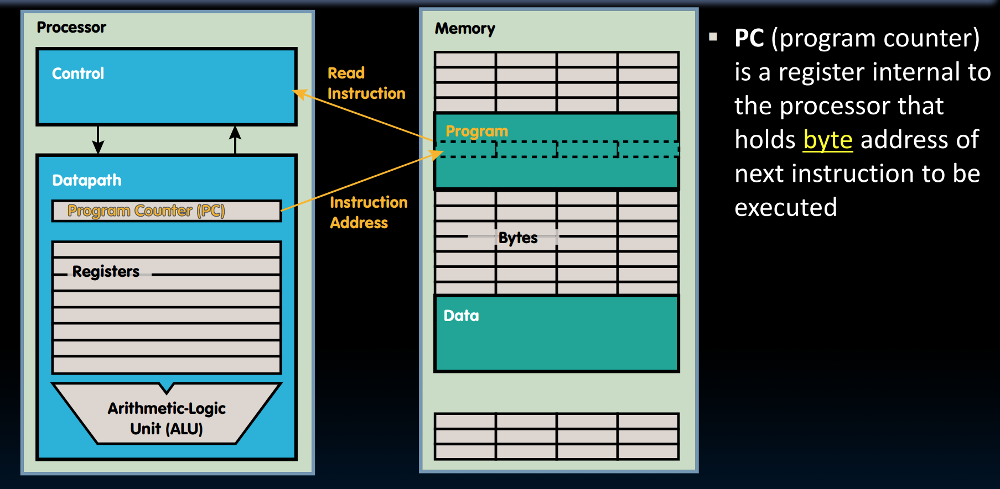
6. 总结
目前为止所有已学习的指令：
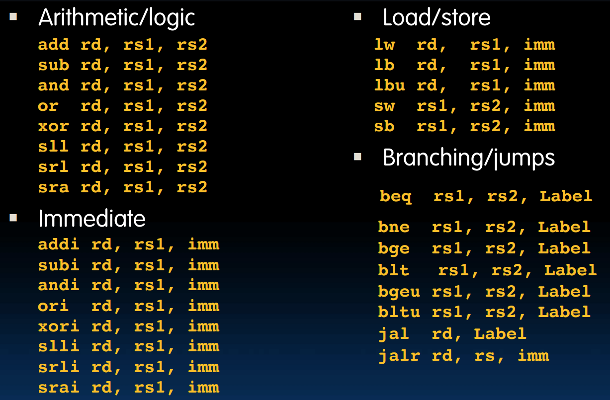